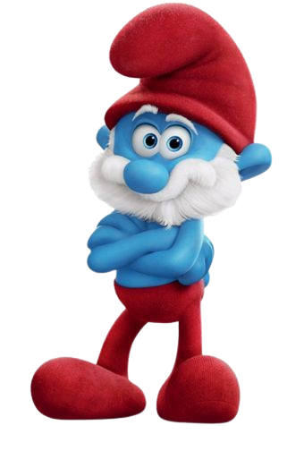
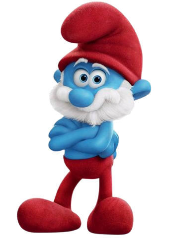
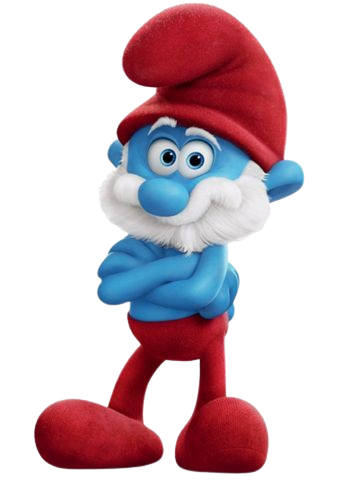
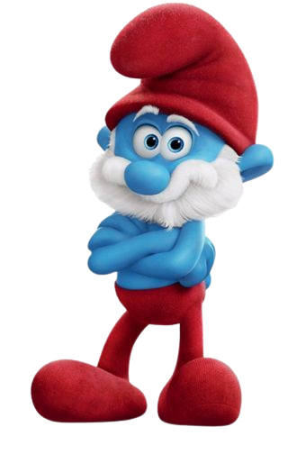

Papa Smurf is the wisest, oldest, and bravest Smurf of all, the big cheese, the one the others all look up to. He is 542 years old, and he can change tacks and find a solution to every situation, even as the Smurfs are continually challenging and testing the rules. Papa Smurf can do magic, and he keeps a laboratory where he creates potions for a variety of uses.